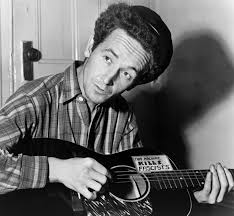
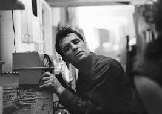
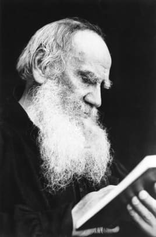
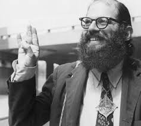

Bob Dylan
Zimmy, Blind Boy Grunt, The Voice of a Generation...
Life and Times


Folk rock singer-songwriter Bob Dylan was born Robert Allen Zimmerman on May 24, 1941, in Duluth, Minnesota. While attending college, he began performing folk and country songs,
taking the name "Bob Dylan." In 1961 Dylan signed his first recording contract, and he emerged as one of the most original and influential voices in American popular music.
Dylan has continued to tour and release new studio albums, including Together Through Life (2009), Tempest (2012), Shadows in the Night (2015) and Fallen Angels (2016).
The legendary singer-songwriter has received Grammy, Academy and Golden Globe awards, as well as the Presidential Medal of Freedom and the Nobel Prize for Literature.
Dylan's Influences
|

|
Woody Guthrie is widely cited as one of Dylan's most important influences. The autobiography of Guthrie, who composed "This Land Is Your Land," fell into the hands of Bob Dylan in September 1960, when he was a college student.
In Dylan's memoir Chronicles, he describes reading the book;
|
|

|
Bob Dylan was obsessed with Beat writing and the bohemian scene of the 1950s, so naturally he loved what he described as the "breathless, dynamic bop phrases" of Jack Kerouac. He said,
"I read On the Road in maybe 1959. It changed my life like it changed everyone else's." In Chronicles, Dylan describes moving to Minneapolis from his remote Minnesota community for university:
|
|

|
Dylan was such a big fan of Leo Tolstoy that he went to the writer's historic estate, located outside of Moscow, and had this to say about his visit, from Chronicles:
|
|

|
Dylan and Ginsberg's storied friendship is chronicled widely in the media. The New Yorker describes Ginsberg as a "sometime mentor" to Dylan:
|
About Dylan
The origin of Dylan's rebellious nature can't be pinpointed. In high school Dylan was a known delinquent, this identity being solidified in 1956 when the principal of Hibbing High School forced him off the talent show stage for performing a piece by Little Richard. Dylan responded with his yearbook quote, stating his life goal was to "join Little Richard."
In the summer after his high school graduation, Zimmerman was working as a busboy at a Fargo, North Dakota cafe when he conned his way into a band with future music star Bobby Vee, called The Shadows, by claiming he had just been on the road with Conway Twitty and only showcasing his piano skills in the key of C. The stage name Zimmerman gave himself was Elston Gunnn. The group arrangement didn't last for very long, due to lack of funds for all involved, and Zimmerman/Gunnn left for Minneapolis at the end of the summer to attend the University of Minnesota.
But Dylan was nowhere near security in the most uncertain time in music recording history - Columbia and other big labels were trying to find contemporary sounds without allowing them to develop naturally, and without knowing what exactly the world needed and wanted to hear. Dylan was perceivably novel of course, but Columbia was looking for something different and strongly considered dropping Dylan before The Freewheelin' Bob Dylan was even recorded. This is when Dylan's friendship with the late Johnny Cash became one of the most vital relationships he had made to date.
Cash and Dylan were known to spend time together as early as 1962, when Columbia was openly discussing dropping Dylan before he even had the chance to record his famous second album The Freewheelin' Bob Dylan. John Hammond claimed it was Cash’s endorsement of Dylan that helped to convince Columbia not to make a colossal mistake by dumping Dylan. In 1969, Dylan returned the favor by making his first television appearance in three years to perform on the first episode of The Johnny Cash Show.
Discography
| Album | Released | Produced By | Editor's Favorite Track |
|---|---|---|---|
| Bob Dylan | 1962 | Legacy & Sony Music Distribution | Song to Woody |
| The Freewheelin' Bob Dylan | 1963 | Columbia & Legacy | Bob Dylan's Blues |
| The Times They Are A-Changin' | 1964 | Columbia | The Times They Are A Changin' |
| Another Side of Bob Dylan | 1964 | Mobie Fidelity Sound Lab | Song to Woody |
| Bringing It All Back Home | 1965 | Columbia & Legacy | Song to Woody |
| Highway 61 Revisited | 1965 | Columbia & Legacy | Song to Woody |
| Blonde on Blonde | 1966 | Mobile Fidelity Sound Lab | Song to Woody |
| John Wesley Harding | 1967 | Columbia | Song to Woody |
| Nashville Skyline | 1969 | Columbia & Legacy | Song to Woody |
| Self Portrait | 1970 | Columbia | Song to Woody |
| New Morning | 1970 | Columbia | Song to Woody |
| Dylan | 1973 | Sony Music Distribution | Song to Woody |
| Planet Waves | 1974 | Columbia | Song to Woody |
| Before The Flood | 1974 | Columbia | Song to Woody |
| Blood on the Tracks | 1975 | Columbia & Legacy | Song to Woody |
| The Basement Tapes | 1975 | Columbia | Song to Woody |
| Desire | 1976 | Columbia | Song to Woody |
| Hard Rain | 1976 | Columbia | Song to Woody |
| Street Legal | 1978 | Columbia & Sony Music Distribution | Song to Woody |
| Slow Train Coming | 1979 | Columbia | Song to Woody |
| At Bodukan | 1979 | Columbia | Song to Woody |
| Saved | 1980 | Columbia | Song to Woody |
| Shot of Love | 1981 | Columbia | Song to Woody |
| Infidels | 1983 | Columbia | Song to Woody |
| Real Live | 1984 | Columbia | Song to Woody |
| Empire Burlesque | 1985 | Columbia | Song to Woody |
| Knocked Out Loaded | 1986 | Columbia | Song to Woody |
| Down in the Groove | 1988 | Columbia | Song to Woody |
| Dylan & the Dead | 1989 | Columbia | Song to Woody |
| Oh Mercy | 1989 | Columbia | Song to Woody |
| Under the Red Sky | 1990 | Columbia | Song to Woody |
| Good as I been to You | 1992 | Columbia | Song to Woody |
| World Gone Wrong | 1993 | Columbia | Song to Woody |
| MTV Unplugged | 1995 | Columbia | Song to Woody |
| Time Out of Mind | 1997 | Columbia | Song to Woody |
| Love and Theft | 2001 | Columbia | Song to Woody |
| Masked and Anonymous | 2003 | Columbia | Song to Woody |
| Bob Dylan: Les Chronques, Vol. 1 | 2005 | Sony BMG | Song to Woody |
| Modern Times | 2006 | Columbia & Sony BMG | Song to Woody |
| I'm Not There [Original Soundtrack] | 2007 | Columbia | Song to Woody |
| Together Through Life | 2009 | Columbia | Song to Woody |
| Christmas in the Heart | 2009 | Sony Music Distribution & Columbia | Song to Woody |
| Bob Dylan's Country Selection | 2011 | Chrome Dreams | Song to Woody |
| Tempest | 2012 | Columbia Records | Song to Woody |
| Shadows in the Night | 2015 | Columbia | Song to Woody |
| Fallen Angels | 2016 | Columbia | Song to Woody |
| Triplicate | 2017 | Columbia & Sony Music Distribution | Song to Woody |